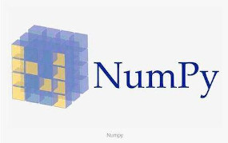

NumPy
NumPy（Numerical Python）是一个 开源的高性能的科学计算和数据分析库，用于快速处理任意维度的数组。并且，NumPy 支持常见的数组和矩阵操作。NumPy 使用 ndarray 对象来处理多为数组，ndarray 对象是一个快速灵活的大数据容器。
1. ndarray简介
Python 中有列表，可当数组使用。Python 中也有 array 模块，但是不支持多维数组。并且列表和 array 模块都没有科学运算函数。所以，Python 不适合做矩阵等科学计算。Numpy 没有使用 Python 本身的数组机制，而是提供了 ndarray 这个 n 维数组类型对象，ndarray 不仅能够很方便地对数组进行存取，而且拥有丰富的科学计算函数，如向量的加法、减法、乘法等。下面通过实例演示创建一个 ndarray 多维数组：
# 导入numpy函数库并指定库的别名
import numpy as np
# 创建一维数组
array1 = np.array([1, 2, 3, 4])
# 创建二维数组
array2 = np.array([[1, 2, 3, 4],[5, 6, 7, 8]])
# 创建三维数组
array3 = np.array([[[1, 2, 3, 4],[5, 6, 7, 8],[9, 10, 11, 12]],[[1, 2, 3, 4],[5, 6, 7, 8],[9, 10, 11, 12]]])
array1：array([1, 2, 3, 4])
array2：array([[1, 2, 3, 4],
[5, 6, 7, 8]])
array3：array([[[ 1, 2, 3, 4],
[ 5, 6, 7, 8],
[ 9, 10, 11, 12]],
[[ 1, 2, 3, 4],
[ 5, 6, 7, 8],
[ 9, 10, 11, 12]]])
2. ndarray与list执行效率的对比
使用 Python 的 list 可以作为一维数组，通过列表的嵌套可以实现多维数组。那为什么还要使用 Numpy 的 ndarray，其实使用 ndarray 处理数组，其效率要比 list 要高很多，下面通过例子来比较下两者的执行效率：
import random
import numpy as np
# 定义一个空列表用于存放(数组)元素
lst = []
# 向lst中添加一千万个元素
for i in range(10000000):
lst.append(random.random())
%time sum01 = sum(lst) # 使用Python中的sum函数对数组元素进行求和；%time是魔法方法，可以查看当前行代码运行一次需要花费的时间。
lst2 = np.array(lst) # 将lst的存储方式转换成ndarray中的存储方式
%time sum02 = np.sum(lst2) # 使用ndarray中的sum对同样的数组进行求和
第一次运行上面的代码：
CPU times: user 40.8 ms, sys: 70 µs, total: 40.8 ms
Wall time: 40.9 ms
CPU times: user 4.07 ms, sys: 0 ns, total: 4.07 ms
Wall time: 3.87 ms
第一次运行上面的代码：
CPU times: user 41.1 ms, sys: 0 ns, total: 41.1 ms
Wall time: 41.1 ms
CPU times: user 3.86 ms, sys: 0 ns, total: 3.86 ms
Wall time: 3.87 ms
第三次运行上面的代码：
CPU times: user 40.8 ms, sys: 87 µs, total: 40.9 ms
Wall time: 40.9 ms
CPU times: user 4.23 ms, sys: 31 µs, total: 4.26 ms
Wall time: 4.07 ms
很明显使用 numpy 的 ndarray 对数组求和的效率要比原生 Python 的 sum 函数求和高 10 倍以上。机器学习最大的特点是需要对大量的数据做运算，如果没有一个快速的解决方案，那么可能Python在机器学习领域就达不到很好的效果。Numpy 专门对 ndarray 的操作和运算进行设计。所以，数组的存储效率和输入输出性能远优于 Python 中的嵌套列表。数组越大，NumPy 的优势就越明显。
3. ndarray的优势
( 1 ) 内存块风格：ndarray 在存储数据的时候是直接存储，Python 的 list 中的数据不是直接存储，需要先找寻一个地址，然后通过地址找到需要的内容。ndarray中的所有元素的类型都是相同的，所以 ndarray 在存储元素时，内存是可以连续的。而 Python 中 list 中的元素是任意的，所以只能通过寻址的方式找到下一个元素。ndarray 在通用性上要输于 list，但在科学计算中，NumPy 的 ndarray 就可以省掉很多循环语句，代码使用方面比 Python 的 list 要简洁。
( 2 ) ndarray 支持并行化运算(向量化运算)：NumPy 内置并行运算功能，当系统有多个核心时，做运算会自动做并行运算。
( 3 ) 效率远高于纯 Python 代码，NumPy 底层使用C语言编写，内部解除 GIL（全局解释器锁），其对数组的操作速度不受 Python GIL 的影响。
4. ndarray数组的属性
数组的维度：
# 导入numpy模块并为模块设置别名
import numpy as np
# 创建一个维度是3行4列的ndarray数组
array01 = np.array([
[80, 78, 98, 88],
[89, 87, 89, 78],
[78, 84, 89, 87]
])
array01.shape
Out[]：(3, 4)
数组的维数：
# 导入numpy模块并为模块设置别名
import numpy as np
# 创建一个维度是3行4列的ndarray数组
array01 = np.array([
[80, 78, 98, 88],
[89, 87, 89, 78],
[78, 84, 89, 87]
])
array01.ndim
Out[]：2
数组中的元素数量：
# 导入numpy模块并为模块设置别名
import numpy as np
# 创建一个维度是3行4列的ndarray数组
array01 = np.array([
[80, 78, 98, 88],
[89, 87, 89, 78],
[78, 84, 89, 87]
])
array01.size
Out[]：12
一个数组元素的长度（字节）：
# 导入numpy模块并为模块设置别名
import numpy as np
# 创建一个维度是3行4列的ndarray数组
array01 = np.array([
[80, 78, 98, 88],
[89, 87, 89, 78],
[78, 84, 89, 87]
])
array01.itemsize
Out[]：8
数组元素的类型：
# 导入numpy模块并为模块设置别名
import numpy as np
# 创建一个维度是3行4列的ndarray数组
array01 = np.array([
[80, 78, 98, 88],
[89, 87, 89, 78],
[78, 84, 89, 87]
])
array01.dtype
Out[]：dtype('int64')
5. ndarray数组的形状
一维数组：
import numpy as np
a = np.array([1, 2, 3, 4, 5])
print(a)
print(a.shape)
[1 2 3 4 5]
(5,) # 表示一维数组，5：数组中有5个元素
二维数组：
import numpy as np
b = np.array([
[1, 2, 3, 4, 5],
[4, 5, 6, 7, 8]
])
print(b)
print(b.shape)
[[1 2 3 4 5]
[4 5 6 7 8]]
(2, 5) # 有两个元素，表示的是二维数组。2：二维数组中有两个一维数组；5：一维数组中有5个元素
三维数组（三维数组是二维数组的叠加）：
import numpy as np
c = np.array([
[[1, 2, 3, 4, 5],
[4, 5, 6, 7, 8]],
[[9, 10, 11, 12, 13],
[14, 15, 16, 17, 18]]
])
print(c)
print(c.shape)
[[[ 1 2 3 4 5]
[ 4 5 6 7 8]]
[[ 9 10 11 12 13]
[14 15 16 17 18]]]
(2, 2, 5) # 第一个2：有2个二维数组；第二个2：二维数组中有2个一维数组；3：在一维数组中有3个元素
6. ndarray数组的类型
不指定数组类型（整型）：
import numpy as np
a = np.array([
[[1, 2, 3, 4, 5, 6],
[7, 8, 9, 10, 11,12],
[12, 13, 14, 15, 16,17]],
[[1, 2, 3, 4, 5, 6],
[7, 8, 9, 10, 11,12],
[12, 13, 14, 15, 16,12]]
])
a.dtype
dtype('int64')
不指定数组类型（小数）：
import numpy as np
a = np.array([
[[1.1, 2, 3, 4, 5, 6],
[7, 8, 9, 10, 11,12],
[12, 13, 14, 15, 16,17]],
[[1, 2, 3, 4, 5, 6],
[7, 8, 9, 10, 11,12],
[12, 13, 14, 15, 16,12]]
])
a.dtype
dtype('float64')
如果不指定，整型默认是 int64，小数默认是 float64。如果指定数组类型：
指定数组类型，将整型指定为 float64 类型：
import numpy as np
a = np.array([
[[1, 2, 3, 4, 5, 6],
[7, 8, 9, 10, 11,12],
[12, 13, 14, 15, 16,17]],
[[1, 2, 3, 4, 5, 6],
[7, 8, 9, 10, 11,12],
[12, 13, 14, 15, 16,12]]
], dtype=np.float64)
print(a)
a.dtype
[[[ 1. 2. 3. 4. 5. 6.]
[ 7. 8. 9. 10. 11. 12.]
[12. 13. 14. 15. 16. 17.]]
[[ 1. 2. 3. 4. 5. 6.]
[ 7. 8. 9. 10. 11. 12.]
[12. 13. 14. 15. 16. 12.]]]
dtype('float64')
不指定数组类型（字符串）：
import numpy as np
a = np.array(['I', 'Like' ,'qianqian'])
a
array(['I', 'Like', 'qianqian'], dtype='<U8')
指定数组类型（字符串）：
import numpy as np
a = np.array(['I', 'Like' ,'qianqian'], dtype=np.string_)
a
array([b'I', b'Like', b'qianqian'], dtype='|S8') # S：String；8：数组中最长字符串是8个字母
7. ndarray数组的生成
从已存在的数组中生成数组的两种方法，numpy.array 和 numpy.asarray 方法，下面通过一个小案例来区别这两种方法。
首先创建一个数组作为已存在数组：
import numpy as np
a = np.array([[1, 2, 3, 4, 5, 6],[7,8,9,10,11,112]])
a
array([[ 1, 2, 3, 4, 5, 6],
[ 7, 8, 9, 10, 11, 112]])
使用 array 在原有数组的基础上生成数组（深度拷贝）：
a1 = np.array(a) # 深拷贝
a1[0, 0] = 0
a
array([[ 1, 2, 3, 4, 5, 6],
[ 7, 8, 9, 10, 11, 112]])
使用 asarray 在原有数组的基础上生成数组：（浅拷贝）
a2 = np.asanyarray(a) # 浅拷贝
a2[0, 0] = 0
a
array([[ 0, 2, 3, 4, 5, 6],
[ 7, 8, 9, 10, 11, 112]])
生成固定范围的数组：
创建等差数列的数组，指定数量，使用的函数是：linspace(start, stop, num=50, endpoint=True, retstep=False, dtype=None,axis=0)
import numpy as np
arr = np.linspace(0,21,6) # start:0,序列的起始值; stop:20,序列的终止值; num:5, 要生成的等间隔样例数量, 默认是50。endpoint:序列中是否是否包含stop值，默认是True
arr
array([ 0. , 4.2, 8.4, 12.6, 16.8, 21. ])
创建等差数列的数组，指定步长，使用的函数：arange(start=None, args, *kwargs)
import numpy as np
arr = np.arange(0, 20, 2, dtype=np.int64) # step:2,步长；dtype:数据类型
arr
array([ 0, 2, 4, 6, 8, 10, 12, 14, 16, 18])
创建等比数列，使用的函数：logspace(start, stop, num=50, endpoint=True, base=10.0, dtype=None,axis=0)
import numpy as np
# 注意这里是生成10的多少次方
arr = np.logspace(0, 2, 3) # num是要生成等比数列的数量；0、2的意思分别是10的0次方～10的2次方；3：生成3个数
arr
array([ 1., 10., 100.])
创建随机数组（正太分布方式），使用 np.random 模块创建正太分布有三种方式，分别是：randn(*dn)，normal(loc=0.0, scale=1.0, size=None)，standard_normal(size=None)。
( 1 ) randn：从标准动态分布中返回一个或多个样本值。
( 2 ) normal：返回指定形状的标准正太分布数组。loc：此动态分布的均值（对应着整个分布的中心）；scale：概率分布的标准差，值越大越矮胖，反之越瘦高。size：输出的是shape，默认是None，只输出一个值。
( 3 ) standard_normal：返回指定形状的标准正太分布的数组
生成均值为1.75，标准差为1的100000000个正态分布数据。使用到的函数：normal(loc=0.0, scale=1.0, size=None)：
# 导入相关模块
import numpy as np
import matplotlib.pyplot as plt
# 数据的准备
x = np.random.normal(1.75, 1, 100000000) # array是一维数组，也就是一个列表
# 创建画布
plt.figure(figsize=(8,4), dpi=100)
# 绘制图像(绘制直方图)
plt.hist(x, 1000) # 1000:1000组数据
# 显示图像
plt.show()

模拟生成一组股票的涨跌幅数据：随机生成4支股票1周的交易日涨幅数据（随机生成涨跌幅在某个正太分布内，如均值是 0，方差是 1）：
import numpy as np
arr = np.random.normal(0, 1, (4,5))
arr
array([[ 1.39648189, 0.17949331, -0.0393186 , 1.54571909, -0.89729191],
[-1.30231063, -0.21940802, 0.43169118, -0.68724142, -1.11523206],
[-1.93539031, -2.21212029, -1.39101401, -2.27047266, -0.1254774 ],
[ 1.67693295, -2.22111556, 1.5863305 , 0.69848128, 2.25766984]])
创建随机数组(均匀分布方式)，使用np.random模块创建正太分布有三种方式，分别是：rand(*dn)，uniform(low=0.0, high=1.0, size=None)，randint(low, high=None, size=None, dtype='l')
( 1 ) rand：返回 [ 0.0,1.0 ) 内的一组均匀分布的数。
( 2 ) uniform：从一个均匀分布（low=0.0, hegh=1.0, size=None）中随机采样，low 是采用下界，float 类型，默认是0；high 是采样下界，float 类型，默认值是1。size 是输出样本的数目，int 或元祖类型。如 size=(m,n,k) 则输出 mnk 个样本，缺省时输出 1 个值。返回值：ndarray 类型，其形状和参数 size 中的描述一致。
( 3 ) randint：从一个均匀分布中随机采样，生成一个整数或 N 维整数数组。对于取数范围，如果 high 不是 None 时，取 [ low,high ) 之间的随机数，否则取值 [ low,high ) 之间随机整数。
# 导入模块
import numpy as np
# 准别数据，生成均匀分布的数据
x = np.random.uniform(-1, 1, 100000000)
# 创建画布
plt.figure(figsize=(8,4), dpi=100)
# 绘制图像(绘制直方图)
plt.hist(x, 1000) # 1000:1000组数据
# 显示图像
plt.show()

8. ndarray数组的索引和切片
( 1 ) 一维数组的索引和切片
import numpy as np
arr = np.array([1, 2, 3, 4])
print(arr)
arr[0]
[1 2 3 4]
1
( 2 ) 二维数组的索引和切片
import numpy as np
arr2 = np.array([[1, 2, 3, 4],[5, 6, 7, 8]])
print(arr2)
arr2[1,1]
[[1 2 3 4]
[5 6 7 8]]
6
( 3 ) 三维数组的索引和切片
import numpy as np
arr3 = np.array([[[1, 2, 3, 4], [5, 6, 7, 8], [9, 10, 11, 12]], [[13, 14, 15, 16], [17, 18, 19, 20], [21, 21, 22, 23]]])
print(arr3)
arr3[1, 1, 1]
[[[ 1 2 3 4]
[ 5 6 7 8]
[ 9 10 11 12]]
[[13 14 15 16]
[17 18 19 20]
[21 21 22 23]]]
18
9. ndarray数组形状的修改
( 1 ) reshape(self, shape, order='C') 函数的应用
import numpy as np
arr = np.array([[1, 2, 3, 4, 5, 6], [7, 8, 9, 10, 11, 12], [13, 14, 15, 16, 17, 18]])
# 打印这个数组的形状
print(arr.shape)
# 修改数组的形状
arr2 = arr.reshape([6, 3])
# 打印改变后数组的形状
print(arr2.shape)
arr2
(3, 6)
(6, 3)
array([[ 1, 2, 3],
[ 4, 5, 6],
[ 7, 8, 9],
[10, 11, 12],
[13, 14, 15],
[16, 17, 18]])
当不知到有多少列的时候：
import numpy as np
arr = np.array([[1, 2, 3, 4, 5, 6], [7, 8, 9, 10, 11, 12], [13, 14, 15, 16, 17, 18]])
# 打印这个数组的形状
print(arr.shape)
# 修改数组的形状
arr2 = arr.reshape([6, -1])
# 打印这个数组的形状
print(arr2.shape)
arr2
(3, 6)
(6, 3)
array([[ 1, 2, 3],
[ 4, 5, 6],
[ 7, 8, 9],
[10, 11, 12],
[13, 14, 15],
[16, 17, 18]])
当不知道有多少行的时候：
import numpy as np
arr = np.array([[1, 2, 3, 4, 5, 6], [7, 8, 9, 10, 11, 12], [13, 14, 15, 16, 17, 18]])
# 打印这个数组的形状
print(arr.shape)
# 修改数组的形状
arr2 = arr.reshape([-1, 2])
# 打印这个数组的形状
print(arr2.shape)
arr2
(3, 6)
(9, 2)
array([[ 1, 2],
[ 3, 4],
[ 5, 6],
[ 7, 8],
[ 9, 10],
[11, 12],
[13, 14],
[15, 16],
[17, 18]])
( 2 ) resize(self, new_shape, refcheck=True) 函数的应用，要区别与reshape方法，其返回结果并不是新的数组，而是把原来的数组给修改了
import numpy as np
arr = np.array([[1, 2, 3, 4, 5, 6], [7, 8, 9, 10, 11, 12], [13, 14, 15, 16, 17, 18]])
# 打印这个数组的形状
print(arr.shape)
# 修改数组的形状
arr.resize([2,8])
# 打印这个数组的形状
print(arr.shape)
arr
(3, 6)
(2, 8)
array([[ 1, 2, 3, 4, 5, 6, 7, 8],
[ 9, 10, 11, 12, 13, 14, 15, 16]])
( 3 ) 数组的转置，将数组的行列进行互换，使用数组名.T
# 数组的转置
import numpy as np
arr = np.array([[1, 2, 3, 4, 5, 6], [7, 8, 9, 10, 11, 12], [13, 14, 15, 16, 17, 18]])
arr.T
array([[ 1, 7, 13],
[ 2, 8, 14],
[ 3, 9, 15],
[ 4, 10, 16],
[ 5, 11, 17],
[ 6, 12, 18]])
10. ndarray数组类型的修改
( 1 ) ndarray.astype(type)：返回修改类型之后的数组
# 返回修改了类型之后的数组
import numpy as np
arr = np.array([[1, 2, 3, 4, 5, 6], [7, 8, 9, 10, 11, 12], [13, 14, 15, 16, 17, 18]])
print(arr.dtype)
arr2 = arr.astype(np.float)
arr2
int64
array([[ 1., 2., 3., 4., 5., 6.],
[ 7., 8., 9., 10., 11., 12.],
[13., 14., 15., 16., 17., 18.]])
( 2 ) ndarray.tostring([order])或者ndarray.tobytes([order])：构造包含数组原始数据字节的Python字节
# 构造包含数组原始数据字节的Python字节1
import numpy as np
arr = np.array([[1, 2, 3, 4, 5, 6], [7, 8, 9, 10, 11, 12], [13, 14, 15, 16, 17, 18]])
str_arr = arr.tostring()
str_arr
b'\x01\x00\x00\x00\x00\x00\x00\x00\x02\x00\x00\x00\x00\x00\x00\x00\x03\x00\x00\x00\x00\x00\x00\x00\x04\x00\x00\x00\x00\x00\x00\x00\x05\x00\x00\x00\x00\x00\x00\x00\x06\x00\x00\x00\x00\x00\x00\x00\x07\x00\x00\x00\x00\x00\x00\x00\x08\x00\x00\x00\x00\x00\x00\x00\t\x00\x00\x00\x00\x00\x00\x00\n\x00\x00\x00\x00\x00\x00\x00\x0b\x00\x00\x00\x00\x00\x00\x00\x0c\x00\x00\x00\x00\x00\x00\x00\r\x00\x00\x00\x00\x00\x00\x00\x0e\x00\x00\x00\x00\x00\x00\x00\x0f\x00\x00\x00\x00\x00\x00\x00\x10\x00\x00\x00\x00\x00\x00\x00\x11\x00\x00\x00\x00\x00\x00\x00\x12\x00\x00\x00\x00\x00\x00\x00'
# 构造包含数组原始数据字节的Python字节2
import numpy as np
arr = np.array([[1, 2, 3, 4, 5, 6], [7, 8, 9, 10, 11, 12], [13, 14, 15, 16, 17, 18]])
str_arr = arr.tobytes()
str_arr
b'\x01\x00\x00\x00\x00\x00\x00\x00\x02\x00\x00\x00\x00\x00\x00\x00\x03\x00\x00\x00\x00\x00\x00\x00\x04\x00\x00\x00\x00\x00\x00\x00\x05\x00\x00\x00\x00\x00\x00\x00\x06\x00\x00\x00\x00\x00\x00\x00\x07\x00\x00\x00\x00\x00\x00\x00\x08\x00\x00\x00\x00\x00\x00\x00\t\x00\x00\x00\x00\x00\x00\x00\n\x00\x00\x00\x00\x00\x00\x00\x0b\x00\x00\x00\x00\x00\x00\x00\x0c\x00\x00\x00\x00\x00\x00\x00\r\x00\x00\x00\x00\x00\x00\x00\x0e\x00\x00\x00\x00\x00\x00\x00\x0f\x00\x00\x00\x00\x00\x00\x00\x10\x00\x00\x00\x00\x00\x00\x00\x11\x00\x00\x00\x00\x00\x00\x00\x12\x00\x00\x00\x00\x00\x00\x00'
11. ndarray数组的去重
数组去重的方法是 unique(ar, return_index=False, return_inverse=False,return_counts=False, axis=None)：`
# 返回修改了类型之后的数组
import numpy as np
arr = np.array([[1, 2, 3, 4, 5, 6], [7, 8, 2, 10, 5, 6], [13, 14, 15, 16, 17, 18]])
arr2 = np.unique(arr)
arr2
array([ 1, 2, 3, 4, 5, 6, 7, 8, 10, 13, 14, 15, 16, 17, 18])
12. ndarray的运算
( 1 ) 逻辑运算
# 生成10名同学5门课程的分数
import numpy as np
scores = np.random.randint(50, 100, (10, 5))
# 取出最后4名同学的成绩，用于逻辑判断
ret1 = scores[6:, 0:5] # 或者scores[6:, 0:5]
# 逻辑判断，如果成绩不小于60分，标记为True，否则为False
ret2 = ret1 > 60 # 返回的结果是标记后的
'''
array([[False, True, True, True, True],
[ True, True, True, True, False],
[ True, True, False, True, True],
[ True, True, False, True, True]])
'''
ret1[ret1 > 60] = 1
ret1
'''
array([[54, 51, 59, 1, 1],
[ 1, 1, 1, 1, 1],
[ 1, 1, 60, 1, 1],
[57, 1, 1, 1, 1]])
'''
( 2 ) 通用判断函数
numpy.all方法：
'''
numpy.all方法是：只要有一个不满足条件，就返回False；所有都满足条件，返回True
判断前两名同学的成绩是否都及格
'''
import numpy as np
scores = np.random.randint(50, 100, (10, 5))
print(scores[0:2, :])
ret = np.all(scores[0:2, :] > 90)
ret
[[77 81 89 51 66]
[78 64 53 53 70]]
False
numpy.any方法：
'''
numpy.any方法是：只要有一个满足条件，就返回True；所有都不满足条件返回False
判断前两名同学的成绩是否有不小于90分的
'''
import numpy as np
scores = np.random.randint(50, 100, (10, 5))
print(scores[0:2, :])
ret = np.any(scores[0:2, :] > 90)
ret
[[82 97 82 79 53]
[54 81 91 67 64]]
True
( 3 ) 三元运算符
通过使用numpy.where能够进行更加复杂的运算：
# 将前四名学生的前四门课程中成绩中大于60的置为1，否则置为0
import numpy as np
scores = np.random.randint(50, 100, (10, 5))[:4, :4]
print(scores)
np.where(scores > 60, 1, 0)
[[76 84 84 52]
[52 85 50 90]
[57 71 93 92]
[90 72 66 67]]
array([[1, 1, 1, 0],
[0, 1, 0, 1],
[0, 1, 1, 1],
[1, 1, 1, 1]])
复合逻辑需要结合np.logical_and和np.logical_or使用：
# 将前四名学生前四门课程中成绩大于60且小于90的置为1，否知置为0
import numpy as np
scores = np.random.randint(50, 100, (10, 5))[:4, :4]
print(scores)
np.where(np.logical_and(scores > 60, scores < 90), 1, 0)
[[61 99 91 92]
[78 80 78 56]
[63 88 80 59]
[84 79 65 86]]
array([[1, 0, 0, 0],
[1, 1, 1, 0],
[1, 1, 1, 0],
[1, 1, 1, 1]])
# 将前四名学生前四门课程中成绩大于90或小于60的置为1，否知置为0
import numpy as np
scores = np.random.randint(50, 100, (10, 5))[:4, :4]
print(scores)
np.where(np.logical_or(scores > 90, scores < 60), 1, 0)
[[76 63 99 78]
[84 85 74 56]
[72 72 92 61]
[56 54 89 60]]
array([[0, 0, 1, 0],
[0, 0, 0, 1],
[0, 0, 1, 0],
[1, 1, 0, 0]])
13. ndrray统计运算相关的函数
max(a, axis) 函数的使用：
# 取最大值
import numpy as np
scores = np.random.randint(50, 100, (10, 5))
print(scores)
np.max(scores)
[[82 51 86 57 79]
[90 87 50 97 90]
[81 93 72 69 90]
[86 50 83 65 83]
[68 66 78 59 65]
[71 64 56 50 72]
[79 69 91 97 76]
[68 67 64 83 54]
[66 63 60 58 53]
[87 64 63 55 60]]
97
min(a, axis) 函数的使用：
# 取最小值
import numpy as np
scores = np.random.randint(50, 100, (10, 5))
print(scores)
np.min(scores)
[[83 81 55 73 93]
[57 61 51 60 91]
[66 77 83 95 56]
[75 76 58 59 96]
[90 72 72 53 84]
[83 67 93 82 57]
[50 91 51 98 62]
[83 53 91 78 91]
[99 77 93 81 99]
[89 71 73 81 87]]
50
mean(a, axis, dtype) 函数的使用：
# 取平均值
import numpy as np
scores = np.random.randint(50, 100, (10, 5))
print(scores)
np.mean(scores)
[[50 90 77 76 78]
[92 84 76 59 58]
[77 69 66 73 68]
[69 57 64 94 75]
[82 52 97 93 57]
[73 53 88 64 60]
[84 98 64 65 88]
[72 54 67 61 57]
[99 83 73 80 64]
[70 63 65 94 58]]
72.6
也可以按照行和列求解最大值、最小值、平均值等，下面以求解最大值、最小值为例子：
# 按照列求最大值
import numpy as np
scores = np.random.randint(50, 100, (10, 5))
print(scores)
np.max(scores, axis=0) # axis=0表示按照列来求解
[[57 66 72 90 69]
[85 90 98 95 71]
[97 75 83 57 55]
[81 77 95 92 61]
[79 68 79 54 66]
[50 52 95 52 96]
[55 64 86 54 73]
[63 67 78 56 84]
[54 76 92 88 89]
[52 79 75 91 62]]
array([97, 90, 98, 95, 96])
# 按照行求最大值
import numpy as np
scores = np.random.randint(50, 100, (10, 5))
print(scores)
np.max(scores, axis=1) # axis=1表示按照行来求解
[[54 77 71 85 54]
[65 89 95 69 75]
[56 95 54 75 63]
[62 84 58 94 89]
[66 51 55 91 85]
[70 97 75 70 84]
[94 80 83 59 90]
[76 70 55 99 74]
[79 60 81 99 57]
[96 82 50 57 80]]
array([85, 95, 95, 94, 91, 97, 94, 99, 99, 96])
argmax(a, axis) 方法的使用：
# 最大值的下标
import numpy as np
scores = np.random.randint(50, 100, (10, 5))
print(scores)
np.argmax(scores)
[[67 73 95 94 92]
[52 91 74 96 76]
[82 70 61 86 81]
[90 69 57 86 66]
[50 53 85 69 65]
[84 69 81 61 52]
[69 61 65 91 70]
[87 50 68 78 83]
[72 93 62 79 89]
[99 75 77 53 87]]
45
# 按列求最大值的下标
import numpy as np
scores = np.random.randint(50, 100, (10, 5))
print(scores)
np.argmax(scores, axis=0)
[[85 68 60 71 62]
[65 71 86 60 84]
[57 81 76 58 95]
[57 83 66 73 55]
[88 77 54 81 68]
[78 53 54 99 54]
[99 86 63 56 97]
[92 96 52 83 57]
[85 83 65 55 76]
[79 77 67 63 69]]
array([6, 7, 1, 5, 6])
# 按行求最大值的下标
import numpy as np
scores = np.random.randint(50, 100, (10, 5))
print(scores)
np.argmax(scores, axis=1)
[[78 53 79 82 60]
[61 92 72 56 61]
[71 64 80 81 81]
[95 55 81 85 74]
[63 82 65 89 91]
[94 62 52 61 93]
[91 69 98 54 63]
[76 53 93 86 83]
[97 98 92 52 95]
[70 60 75 83 74]]
array([3, 1, 3, 0, 4, 0, 2, 2, 1, 3])
argmin(a, axis) 的使用同 argmax(a, axis) 的相似，统计运算中还可以求中位数 [ median(a, axis) ]、平均值、标准差 [ std(a, axis, dtype) ] 和方差 [ var(a, axis, dtype) ] 等。
14. 数组间的运算
数组与数之间的运算：
执行程序1：
import numpy as np
arr = np.array([[1, 2, 3, 4, 5], [6, 7, 8, 9, 10]])
arr + 3 # 所有元素加3
打印结果：
array([[ 4, 5, 6, 7, 8],
[ 9, 10, 11, 12, 13]])
执行程序2：
import numpy as np
arr = np.array([[1, 2, 3, 4, 5], [6, 7, 8, 9, 10]])
arr / 2 # 所有元素除以2
打印结果：
array([[0.5, 1. , 1.5, 2. , 2.5],
[3. , 3.5, 4. , 4.5, 5. ]])
执行程序3：
import numpy as np
arr = np.array([[1, 2, 3, 4, 5], [6, 7, 8, 9, 10]])
arr * 3 # 所有元素乘3
打印结果：
array([[ 3, 6, 9, 12, 15],
[18, 21, 24, 27, 30]])
注意：如果是列表*3，则只会分别粘贴复制3次列表中的元素，组成新的列表
数组与数组的运算：(不同形状的数组是不可以在一起运算的)
测试程序：
import numpy as np
arr1 = np.array([[1, 2, 3, 4], [5, 6, 7, 8]])
arr2 = np.array([[1, 2, 3, 4, 5], [6, 7, 8, 9, 10]])
arr1 + arr2
测试结果：
---------------------------------------------------------------------------
ValueError Traceback (most recent call last)
<ipython-input-44-18acd144a7ff> in <module>
2 arr1 = np.array([[1, 2, 3, 4], [5, 6, 7, 8]])
3 arr2 = np.array([[1, 2, 3, 4, 5], [6, 7, 8, 9, 10]])
----> 4 arr1 + arr2
ValueError: operands could not be broadcast together with shapes (2,4) (2,5)
广播机制：数组在进行矢量运算时，要求数组的形状是相等的。当形状不相等的数组执行算术运算时，就会出现广播机制，该机制会对数组进行扩展，使数组的形状属性值一样。这样，就可以进行矢量化运算。广播机制实现了两个或两个以上数组的运算，即使这些数组的shape不是完全相同的，只要满足一个条件即可：
( 1 ) 数组的某一维度等长
( 2 ) 其中一个数组的某一个维度是 1
执行程序：
import numpy as np
arr1 = np.array([[1, 2, 3, 4, 5, 6], [7, 8, 9, 10, 11, 12]])
arr2 = np.array([[1], [2]])
print('arr1的形状是：',arr1.shape)
print('arr2的形状是：',arr2.shape)
arr1 + arr2
执行结果：
arr1的形状是： (2, 6)
arr2的形状是： (2, 1)
array([[ 2, 3, 4, 5, 6, 7],
[ 9, 10, 11, 12, 13, 14]])
广播机制需要扩展维度小的数组，使得它与维度大的数组的shape值相同，以便使用元素级函数或者运算符进行运算。
15. 矩阵与向量相关
矩阵和数组的区别是矩阵必须是二维的，而数组可以是多维的。矩阵和向量的区别是向量是特殊的矩阵。 矩阵的加法：行和列相等可以进行加法，对应元素进行加和。 标量乘法：矩阵中的每个元素都要一一和标量进行相乘。 矩阵和向量乘法：m * n阶的矩阵和 n * 1 阶的向量进行相乘，得到 m * 1 阶的向量 矩阵乘法：m * n 矩阵乘以 n * o，得到 m*n 阶矩阵 矩阵乘法的性质：
( 1 ) 矩阵乘法不满足交换律：AxB 不等于 BxA
( 2 ) 矩阵乘法满足结合律：(AxB)xC=Ax(BxC)
( 3 ) 单位矩阵：主对角线上的元素都是 1，其它元素都是 0，这种矩阵是单位矩阵
矩阵的逆：如矩阵是一个 m*m 矩阵(方阵)，如果有逆矩阵，则 AA-1=A-1A 。低阶矩阵球逆的方法是待定系数法和初等变换。
矩阵的转置：矩阵的行转置后变成矩阵的列，矩阵的列变成矩阵的行。
矩阵的运算：矩阵的运算可以使用在大学求最终成绩上，很多位学生(决定矩阵的行数)的平时成绩和期末成绩组成 n 行 2 列的矩阵，再乘以 0.7 和 0.3 组成的 2 行 1 列的矩阵，得到 n 行 1 列的矩阵就是每位学生的最终成绩。在 numpy 库中矩阵乘法使用到 matmul 和 dot 函数：两者相同点是都可以做矩阵之间的乘法，不同点是 matmul 不支持矩阵与标量的乘法，而 dot 支持。
测试两者都可以做矩阵之间的乘法：
# 测试dot和matmul函数都可以做矩阵之间的乘法
import numpy as np
a = np.array([[89, 90], [88, 89], [87, 78]])
b = np.array([0.7, 0.3])
arr1 = np.matmul(a, b)
print(arr1)
arr2 = np.dot(a, b)
print(arr2)
测试结果：
[89.3 88.3 84.3]
[89.3 88.3 84.3]
测试只有dot函数支持矩阵与标量的乘法：
# 测试只有dot函数支持矩阵与标量的乘法
import numpy as np
a = np.array([[89, 90], [88, 89], [87, 78]])
arr1= np.dot(2,a)
print(arr1)
arr2= np.matmul(2, a)
[[178 180]
[176 178]
[174 156]]
---------------------------------------------------------------------------
ValueError Traceback (most recent call last)
<ipython-input-59-653e8ec1b561> in <module>
4 arr1= np.dot(2,a)
5 print(arr1)
----> 6 arr2= np.matmul(2, a)
ValueError: matmul: Input operand 0 does not have enough dimensions (has 0, gufunc core with signature (n?,k),(k,m?)->(n?,m?) requires 1)